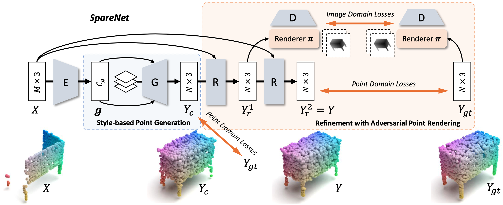
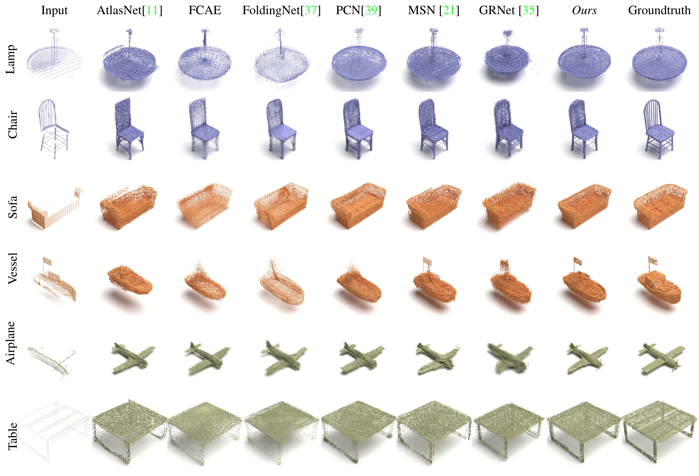

CVPR 2021
Style-based Point Generator with Adversarial Rendering for Point Cloud Completion
Chulin Xie1*
Chuxin Wang2*
Bo Zhang3
Hao Yang3
Dong Chen3
Fang Wen3
1University of Illinois at Urbana-Champaign 2University of Science and Technology of China
3Microsoft Research Asia
*Equal contribution
[Paper]
[Code]
Abstract
In this paper, we proposed a novel Style-based Point Generator with Adversarial Rendering (SpareNet) for point cloud completion.
Firstly, we present the channel-attentive EdgeConv to fully exploit the local structures as well as the global shape in point features.
Secondly, we observe that the concatenation manner used by vanilla foldings limits its potential of generating a complex and faithful shape. Enlightened by the success of StyleGAN, we regard the shape feature as style code that modulates the normalization layers during the folding, which considerably enhances its capability.
Thirdly, we realize that existing point supervisions, e.g., Chamfer Distance or Earth Mover's Distance, cannot faithfully reflect the perceptual quality of the reconstructed points. To address this, we propose to project the completed points to depth maps with a differentiable renderer and apply adversarial training to advocate the perceptual realism under different viewpoints. Comprehensive experiments on ShapeNet and KITTI prove the effectiveness of our method, which achieves state-of-the-art quantitative performance while offering superior visual quality.
Overview

The architecture of SpareNet. An encoder E encodes the partial points X into a shape code g,
leveraged by a style-based generator G to synthesize a coarse completion Yc,
which is recurrently improved with refiner R into the final result Y.
Adversarial point rendering is applied to advocate the perceptual realism of completed points under different views.
SpareNet
Results

Visualized completion comparison on ShapeNet.
Paper
Last update: Mar, 2021